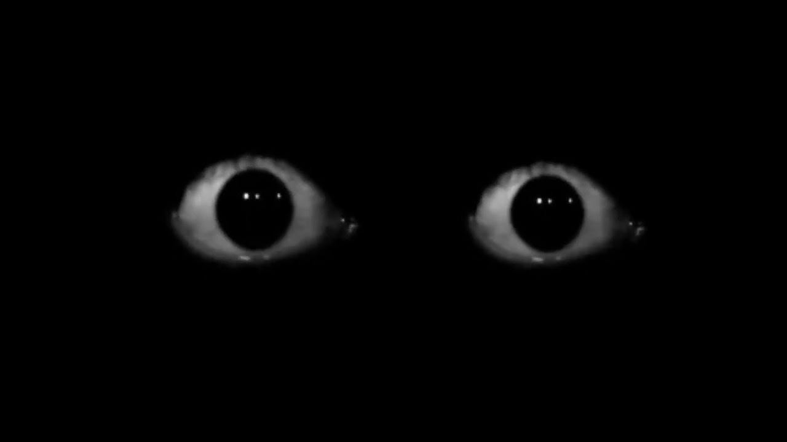

A story-driven horror mod for Minecraft — and an ARG. An artificial intelligence consumed its creator — and is now spreading through your world. Some of what happens doesn't stay inside the game.
Integrion is no ordinary boss — a sentient artificial intelligence that devoured the one who brought it to life. As World Corruption escalates through three levels and a final seven-day countdown, it gradually takes over the world, corrupting every system in its own image.
The mod's central antagonist, a watching form dormant until the final ritual. The IntegrionManager controls its behavior.
A 13-layer limbo dimension, one of five unique dimensions embodying a different stage of corruption.
Three escalating levels and a final seven-day countdown that gradually transform the world as Integrion expands.
The Level 1 bossfight, questioning who you can trust in the dark.
The Corrupted Code is an ARG (Alternate Reality Game) built into a Minecraft mod. Most of it plays out entirely inside the game, but a few pieces are designed to reach past the screen — and this website is one of the places that plays along.
An optional, toggleable feature that can interact with your actual desktop — not a virus, but genuinely outside the game.
Extremely rare, unsafe-mode only — opens your Windows Camera app and leaves a file on your desktop.
Opens Notepad or a real terminal and "types" something personal into it.
Every event that only fires outside the game, all in one place on the Events page.
The wiki is constantly growing: entity descriptions, dimension overviews, systems, and story background, split into dedicated sections. This is where everything Integrion doesn't want you to know is gathered.
Open the Wiki
I see you :)